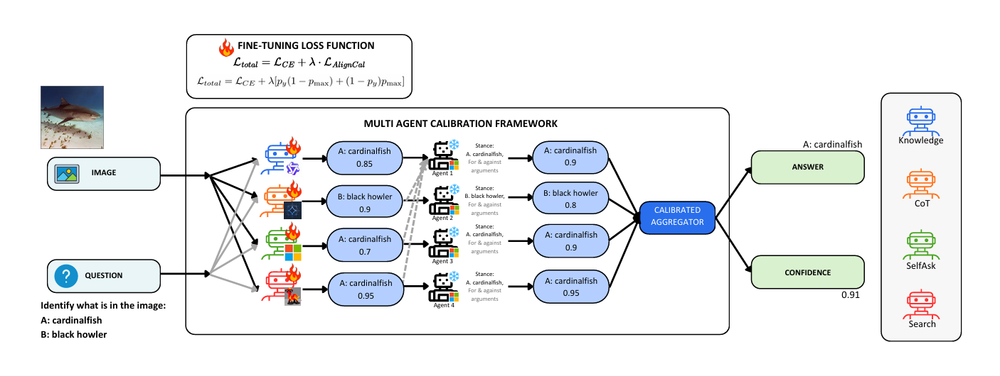
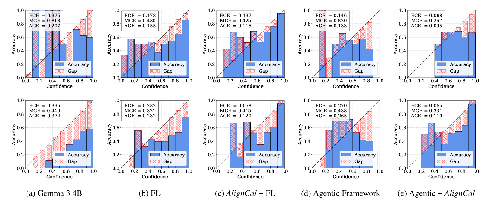

In the context of Visual Question Answering (VQA) and Agentic AI, calibration refers to how closely an AI system’s confidence in its answers reflects their actual correctness. This aspect becomes especially important when such systems operate autonomously and must make decisions under visual uncertainty. While modern VQA systems, powered by advanced vision-language models (VLMs), are increasingly used in high-stakes domains like medical diagnostics and autonomous navigation due to their improved accuracy, the reliability of their confidence estimates remains under-examined. Particularly, these systems often produce overconfident responses. To address this, we introduce AlignVQA, a debate based multi-agent framework, in which diverse specialized VLM– each following distinct prompting strategies– generate candidate answers and then engage in two-stage interaction: generalist agents critique, refine and aggregate these proposals. This debate process yields confidence estimates that more accurately reflect the model’s true predictive perfor mance. We find that more calibrated specialized agents pro duce better aligned confidences. Furthermore, we introduce a novel differentiable calibration-aware loss function called AlignCal designed to fine-tune the specialized agents by minimizing an upper bound on the calibration error. This objective explicitly improves the fidelity of each agent’s confidence estimates. Empirical results across multiple benchmark VQA datasets substantiate the efficacy of our approach, demonstrating substantial reductions in calibration discrepancies. Furthermore, we propose a novel differentiable calibration aware loss to fine-tune the specialized agents and improve the quality of their individual confidence estimates based on minimising upper bound calibration error. Empirical evaluations across multiple benchmark VQA datasets demonstrate the effectiveness of our approach in significantly reducing calibration discrepancies.
